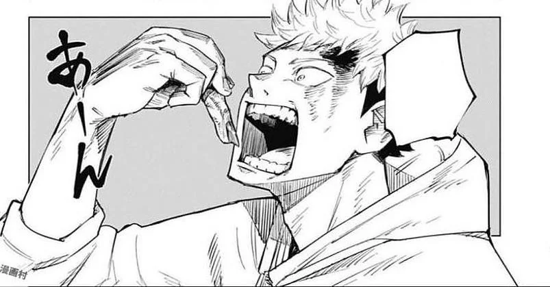

Top Picks



Jujutsu Kaisen follows Yuji Itadori, a high school student who swallows a cursed finger to save his friends, becoming the host of Sukuna, the King of Curses. He is taken to Jujutsu High to learn how to fight curses under Satoru Gojo’s guidance. Alongside fellow students Megumi Fushiguro and Nobara Kugisaki, Yuji battles powerful curses while seeking to collect Sukuna’s fingers. As enemies like Kenjaku and cursed spirits threaten humanity, Yuji struggles with the dark power inside him, fighting to protect his friends and the world from destruction.